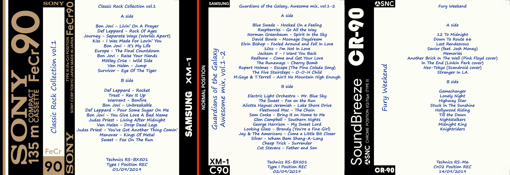
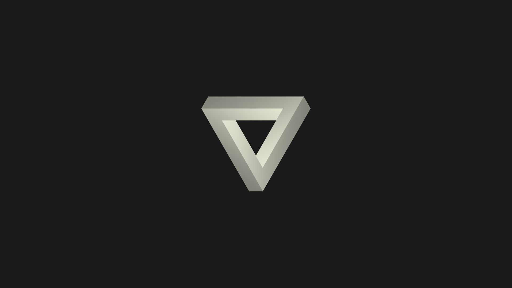
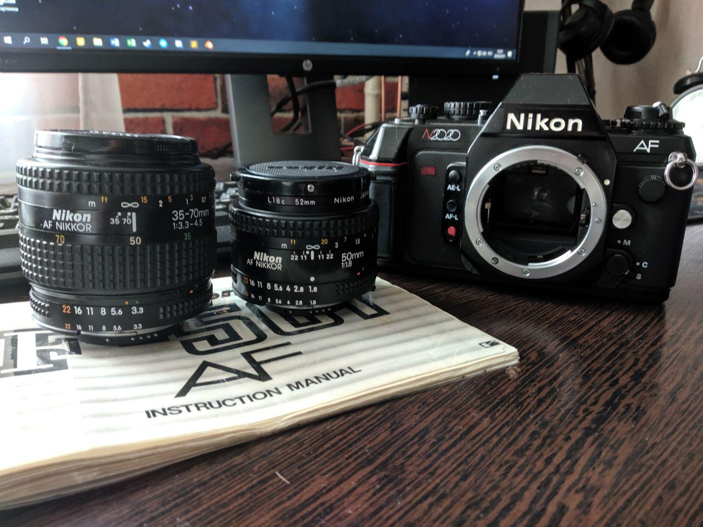

Q1. Расскажите, чем, на ваш взгляд, отличается хорошая верстка от плохой с точки зрения:
Пользователя;
Менеджера проекта;
Дизайнера;
Верстальщика;
Клиентского программиста;
Серверного программиста.
Ответ: На мой взгляд, хорошая вёрстка с точки зрения:
Пользователя: когда пользователь видит интуитивно понятный интерфейс для взаимодействия с сайтом. Также при хорошей верстке вес страниц ниже и пользователь может рассчитывать на быструю загрузку даже с не самой высокой скоростью интернет-соединения.
Менеджера проекта: когда менеджер проекта может быть уверен, что все требования заказчика удовлетворены и заказчик высоко оченит результат.
Дизайнера: когда вёрстка максимально отражает художественный замысел дизайнера.
Верстальщика: когда верстальщик, присоединившийся к проекту в разгар разработки, сможет быстрее разобраться в коде и без труда приступить к работе в новой команде.
Клиентского программиста: когда понятны названия классов, которые предстоит использовать, и название класса в кратце должно отражать что этот класс делает.
Серверного программиста: когда при такой вёрстке и использовании таких методов, как, например, конкатенация файлов, сервер не перегружается большим количеством обращений к нему.
Q2. Опишите основные особенности верстки крупных многостраничных сайтов, дизайн которых может меняться в процессе реализации и поддержки.
Расскажите о своем опыте верстки подобных сайтов: какие методологии, инструменты и технологии вы применяли на практике.
Ответ: При наличии элементов, одинаковых на всех страницах, такие как шапка, подвал и, возможно, навигационная строка, можно использовать SSI (Server Side Includes), чтобы эти элементы использовать как отдельные файлы, подключаемые на каждой странице. Таким образом, изменив один файл, например, подвал, он автоматически обновится на всех остальных страницах.
Расскажите о своем опыте верстки подобных сайтов: какие методологии, инструменты и технологии вы применяли на практике.
Ответ: Мой опыт ограничен одним курсовым проектом в университете, где я как раз использовал выше упомянутый SSI.
Q3. Опишите основные особенности верстки сайтов, которые должны одинаково хорошо отображаться как на любом современном компьютере, так и на смартфонах и планшетах под управлением iOS и Android. Расскажите о своем опыте верстки подобных сайтов: какие инструменты и технологии вы применяли, как проверяли результат на различных устройствах, какие именно устройства требовалось поддерживать.
Ответ: Из опыта - в выше упомянутом курсовом проекте были использованы медиа-запросы для оптимизации отображения для экранов телефона (исходя из размеров области, на которой отображается страница) и для вывода страницы на печать.
Q4. Расскажите, какие инструменты помогают вам экономить время в процессе написания, проверки и отладки кода.
Ответ: При написании курсового проекта использовал текстовый редактор Brackets (VS Code тогда только появился, и мы о нём не знали), который позволял с помощью расширения по FTP зайти на сервер и изменять файлы прямо на нём, что экономило немного времени на проверке кода, который выполнялся только на веб-сервере (SSI и немного PHP) и невозможно было проверить на локальной машине.
Q5. Вам нужно понять, почему страница отображается некорректно в Safari на iOS и в IE на Windows. Код писали не вы, доступа к исходникам у вас нет. Ваши действия? Сталкивались ли вы с подобными проблемами на практике?
Ответ: Я не сталкивался с подобной ситуацией, но могу предположить, что первым делом я бы зашёл в режим отладки в браузере, чтобы увидеть код, после чего, зная особенности оптимизации под разные браузеры, можно обнаружить ошибку (единственное, что я знаю, что у Babel есть форк под IE, который так и называется ie.js, в котором некоторые методы называются по-другому).
Q6. Дизайнер отдал вам макет, в котором не показано, как должны выглядеть интерактивные элементы при наведении мыши. Ваши действия?
Ответ: Для стандартных элементов, вроде ссылок или кнопок, можно использовать стандартные анимации подчеркивания или изменения прозрачности. Для более сложных элементов - спросить с дизайнера состояние наведения. Хотя лучше в любом случае сразу обратиться к дизайнеру.
Q7. Какие ресурсы вы используете для развития в профессиональной сфере? Приведите несколько конкретных примеров (сайты, блоги и так далее).
Какое направление развития вам более близко: JS-программирование, HTML/CSS-верстка или и то, и другое?
Какие ещё области знаний, кроме тех, что непосредственно относятся к работе, вам интересны?
Ответ:
В целом это stackoverflow.com, medium.com, tproger.ru, habr.com
Конкретно HTML/CSS - htmlbook.ru
Какое направление развития вам более близко: JS-программирование, HTML/CSS-верстка или и то, и другое?
Ответ: Мне наиболее близки HTML/CSS, хотя хотел бы и JS изучить и такие фреймворки, как React.
Какие ещё области знаний, кроме тех, что непосредственно относятся к работе, вам интересны?
Ответ: 3D-моделирование, фотография, дизайн (интерфейсов, логотипов и т.д.)
Q8. Расскажите нам о себе и предоставьте несколько ссылок на последние работы, выполненные вами.
Меня зовут Никита. Мне почти 26 лет (ДР 8 сентября). Закончил магистратуру в МАИ. Последние 3 года проработал в Туполеве инженером-конструктором, но решил сменить сферу деятельности, научиться чему-то новому.
В свободное от работы время люблю развлекаться в 3DS Max, фотошопе и заниматься фотографией, если погода подходящая. Начнём с моделирования:
.png)
.png)
.png)
.jpg)
.jpg)
.jpg)
.jpg)
Как ранее упомянул, я ещё развлекаюсь в фотошопе (хотя считаю, что растровая графика - прошлый век, особенно в вэбе, когда для потребителя стали доступны 2К/4К-мониторы, так что хотел бы освоить вектор):
Также при любом удобном случае люблю выбраться прогуляться, пофотографировать. Для этой цели имею легендарный Nikon N2020 1986-го года выпуска - первый массовый серийный фотоаппарат с автофокусом (который я всё равно не использую):
.jpg)
.jpg)
.jpg)
ТЫК - Курсовой проект с использованием SSI, PHP в подвале и просто парой лабораторных работ по PHP.
ТЫК - Тот же курсовой проект до использования SSI, но с PHP в подвале.
ТЫК - Проект, который я делал для того, чтоб попрактиковаться в html/css и параллельно попробовать изучить язык Go.
В свободное от работы время люблю развлекаться в 3DS Max, фотошопе и заниматься фотографией, если погода подходящая. Начнём с моделирования:
Модель оптимизирована для печати на обычных домашних 3D-принтерах с объёмом печатываемых деталей 20х20х20 сантиметров и для последующей обработки:
Как ранее упомянул, я ещё развлекаюсь в фотошопе (хотя считаю, что растровая графика - прошлый век, особенно в вэбе, когда для потребителя стали доступны 2К/4К-мониторы, так что хотел бы освоить вектор):
Я очень люблю старую технику и музыку 70-80-х. Складываем два плюс два и получаем любовь к аудиокассетам. Есть магнитофон 1980-го года, на котором я и записываю музыку на кассеты. А кассетам нужны обложки со списком треков. Просто бумажка со списком выглядела паршиво, поэтому я рисовал полноценные обложки, попутно пытаясь сохранить внешний вид родной обложки. Так же люблю рисовать себе простенькие абстрактные обои на рабочий стол и аватарки для аккаунтов на различных сервисах.


Также при любом удобном случае люблю выбраться прогуляться, пофотографировать. Для этой цели имею легендарный Nikon N2020 1986-го года выпуска - первый массовый серийный фотоаппарат с автофокусом (который я всё равно не использую):

Ну и ссылки на ранее воплощенные и почти воплощённые проекты: